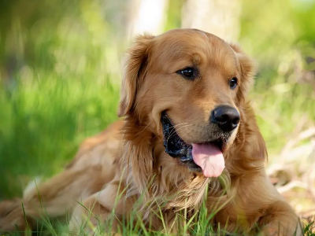
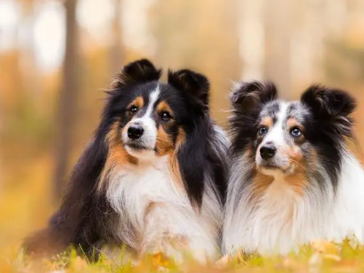
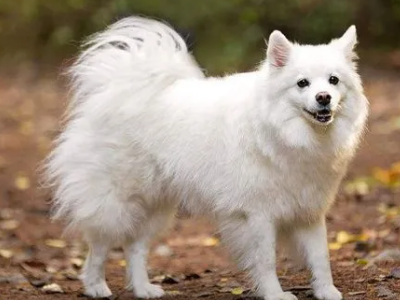
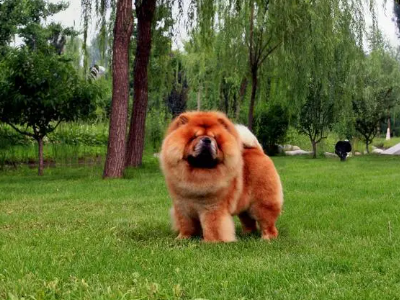
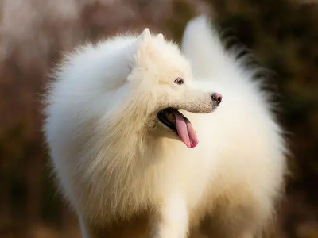
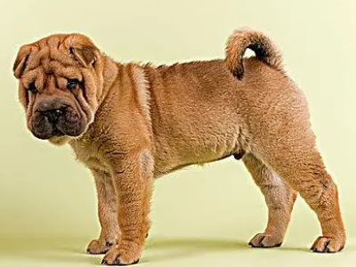
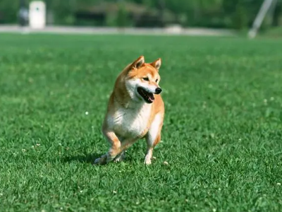
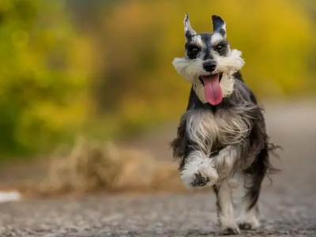

宠物狗网

常见品种
-

金毛
金毛犬是比较现代并很流行的狗的品种，是单猎犬，作为用来在猎捕野禽的寻回犬而培养出来的，游泳的续航力极佳。它是最常见的家犬之一
-
哈士奇
哈士奇的耳朵呈三角形,毛发浓密,外耳毛色多与体表毛色相近,内耳多为白色,大小中等,一般直立。
-

比熊
比熊狗的特点是大多有白色的毛发，卷曲的毛发，黑色或深棕色的眼睛呈圆形，下垂的耳朵稍微比眼睛靠上，黑色的鼻子，剪刀状的牙齿和对称的肌肉。
-

博美
博美犬的外形特点是娇小,耳朵尖直立在头顶,头发内外两层,尾毛浓密;性格特点活泼开朗,喜欢撒娇,对主人很忠诚,警惕性也很高,爱管闲事,捣蛋能力很强。
-

牧羊犬
德国牧羊犬是通过南北德各优良品种杂交后的综合产物,它们动作敏捷,聪明易训,适合各种复杂的工作环境,它们经常被部署参加各种不同的任务。
-
拉布拉多
拉布拉多犬天性活泼、性格温顺,特别是成年后就会变得沉稳大气、憨厚忠诚、活泼可爱、温顺黏人。智商虽然不如金毛高,但还是很聪明的。
-

爱斯基摩
爱斯基摩的动作敏捷、有力,机警而美丽。是典型的北欧犬种,体态为小体型到中等体型。总是一种单一的白色,或白色中掺杂着小块奶酪色。
-

松狮
松狮犬毛发旺盛、面部扁平，常年一副很忧愁的样子，但是不得不说真的很可爱。而且松狮犬长着别的狗狗没有的蓝紫色舌头，很有特色。
-

萨摩耶
萨摩耶的特点之一为性格温顺、爱撒娇 几乎认识的每只萨摩耶都是撒娇精，碰到认识的不认识的人潜意识都觉得是喜欢自己的，疯狂讨好撒娇，
-

沙皮犬
沙皮犬宠少了威严的气势,在有了“家庭”之后,它们会投入给家庭它们全部的爱。 天性中立的沙皮对待陌并不热情,它们天生性格比较中立。
-

柴犬
柴犬性情温顺,忠实,有服从性、忍耐,朴实而雅致,灵巧机敏,英勇大胆、亲切而富有感情,这些特点共同产生一种独特的天性。
-

雪纳瑞犬
雪纳瑞犬凭借稳定性格、精力充沛、活泼可爱的特点成为了人们热衷饲养的对象。